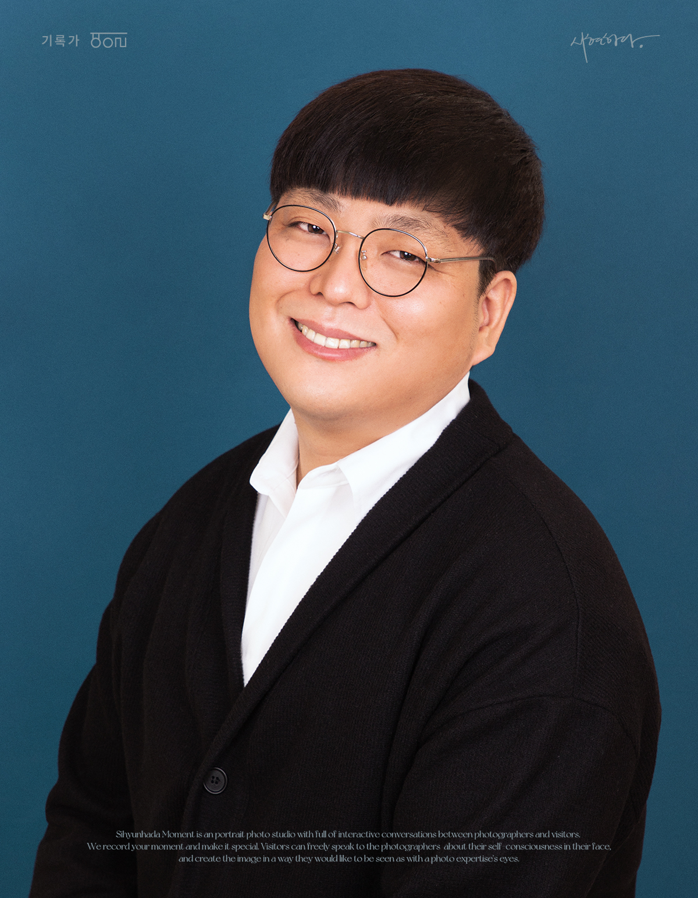

SEOBI'S PORTFOLIO
새로운 변화가 끊임없이 일어나는 웹 환경에서 최신 트렌드에 뒤쳐지지 않기 위해
스터디모임과 세미나에 많이 참여하여 힘쓰겠습니다.

HELLO!
MY NAME IS SEOBI
MY NAME IS SEOBI
안녕하세요! 웹 개발자 전대섭입니다. 조금은 늦은 나이에 개발자에 도전합니다!
저는 사회복지사로서 세상의 밝은 미래를 만들기 위해 노력했습니다. 그러다 관심이 있었던 프로그래밍을 입문하게 되었고, 코드를 알아가는데 재미를 느꼈습니다. 그러면서 본격적으로 프로그래밍을 하기위해 사회복지사의 일을 정리하고 매일 개발 공부하는데 시간을 투자하고 있습니다.
37살! 남들보다 늦은만큼 더욱 더 많은 노력과 열정을 통하여 가치있는 개발자가 되고 싶습니다!!